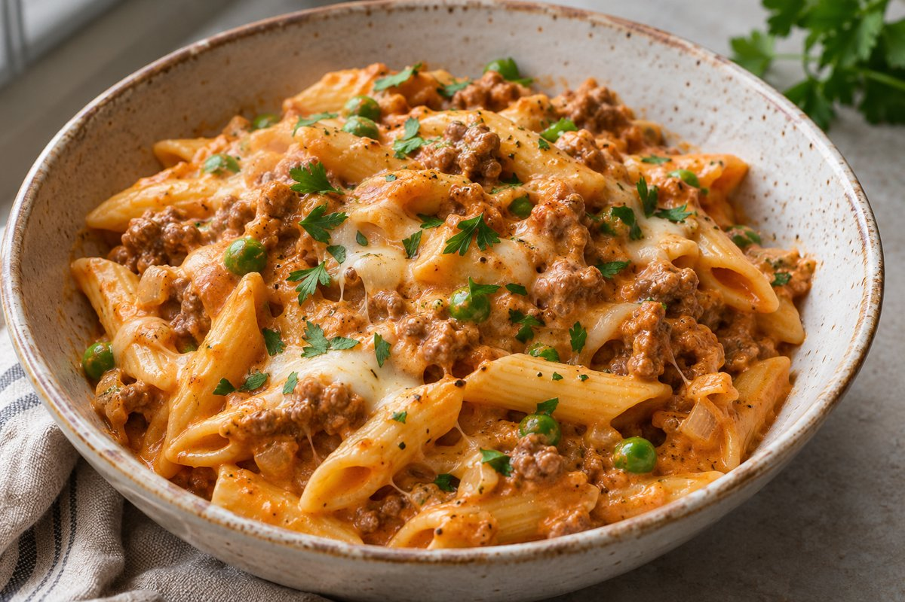

Cremige Hackfleisch-Pasta mit Erbsen und Mozzarella

Pasta mit Hackfleisch und Erbsen in einer cremigen Tomaten-Sahne-Sauce mit geschmolzenem Mozzarella und frischer Petersilie.
2–3 Portionen
Zutaten
- 250 g Pasta
- 350 g Hackfleisch
- 1 EL Olivenöl
- ½ Zwiebel, fein gewürfelt
- 2–3 Knoblauchzehen, fein gehackt
- 1 EL Tomatenmark
- 60 g Erbsen
- 250 ml Sahne
- 1 Kelle Pastawasser
- 100 g geriebener Mozzarella
- Salz, Pfeffer, Paprikapulver und Curry
- Frische Petersilie zum Garnieren
Zubereitung
- Die Pasta nach Packungsanweisung al dente kochen und etwas Pastawasser auffangen.
- Olivenöl in einer Pfanne erhitzen und das Hackfleisch kräftig anbraten.
- Zwiebel und Knoblauch dazugeben und kurz mitbraten. Anschließend das Tomatenmark einrühren und kurz anrösten.
- Mit Sahne und etwas Pastawasser ablöschen und alles kurz köcheln lassen.
- Erbsen hinzufügen.
- Den geriebenen Mozzarella unterrühren, bis er geschmolzen ist. Danach die Pasta unterheben und alles gut vermengen. Mit frischer Petersilie garnieren.
Tipp aus der Quelle: Je nach gewünschter Cremigkeit einfach etwas mehr Pastawasser hinzufügen.
Hinweise zur Quelle
Rezept nach den bereitgestellten Screenshots der Instagram-Caption. Beschreibender Titel redaktionell vergeben, da kein Originaltitel sichtbar ist. Pastaform, Hackfleischsorte und Zustand der Erbsen sind nicht spezifiziert. Zeiten sowie Gewürz- und Petersilienmengen sind nicht angegeben. Die Quelle ordnet die Gewürze keinem Zubereitungsschritt zu; die Schritte wurden daher nicht ergänzt. Eine Kelle Pastawasser wurde nicht in Milliliter umgerechnet.
Originalquelle: Instagram-Reel.